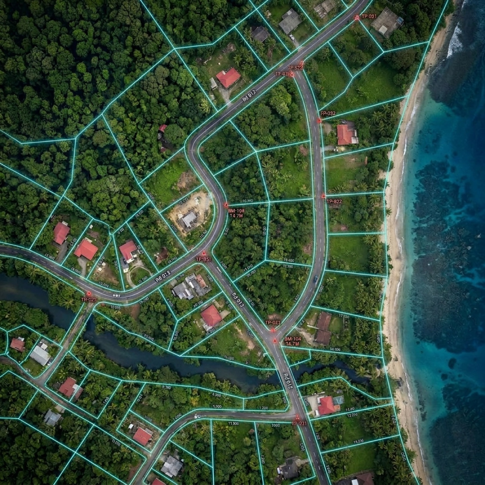

ทดสอบ your ideas before construction
ทุกภูมิทัศน์มีความท้าทายเฉพาะตัวก่อนการก่อสร้างจะเริ่ม — ความลาดชัน ก้อนหิน พืชพรรณ ถนนทางเข้า การระบายน้ำ และความสัมพันธ์เชิงพื้นที่ที่ไม่ชัดเจน แบบแปลน 2 มิติแทบไม่สื่อว่าโครงการจะพบกับภูมิประเทศจริงอย่างไร
วิธีการ
ที่ดินจริงกลายเป็นพื้นที่ที่คุณทดสอบได้
เราแปลงที่ดินจริงให้เป็นสภาพแวดล้อม 3 มิติแบบสมจริง ด้วยการสแกน LiDAR การทำแผนที่ด้วยโดรน Gaussian Splatting และกระบวนการสร้างภาพดิจิทัล
สถาปนิก นักพัฒนา และเจ้าของที่ดินสำรวจภูมิประเทศจริงได้ก่อนเริ่มก่อสร้าง และทดสอบแนวคิดภายในพื้นที่ดิจิทัลได้โดยตรง
ออกแบบมาเพื่อลดความไม่แน่นอน
เครื่องมือช่วยตัดสินใจ ไม่ใช่แค่ภาพ
แนวเขต การเปลี่ยนแปลงระดับ การวิเคราะห์ความลาดชัน บริบทของสภาพแวดล้อม และการเทียบกับแผนที่ราชการ 2 มิติ ถูกแสดงร่วมกันในกระบวนการเดียวที่เชื่อมโยงกัน อาคารในอนาคตถูกวางบนภูมิประเทศที่สแกนไว้ เพื่อเข้าใจวิว ทางเข้า สัดส่วน และข้อจำกัดในการก่อสร้าง
- 01
ความเข้าใจภูมิประเทศ
สำรวจความลาดชันจริง ระดับความสูง ก้อนหิน พืชพรรณ และทางเข้า ก่อนการก่อสร้างจะเริ่ม
- 02
การเทียบแนวเขตและแผนที่
รวมภูมิประเทศที่สแกนไว้เข้ากับแผนที่ราชการ 2 มิติและข้อมูลแนวเขตในสภาพแวดล้อมเดียว
- 03
การทดสอบแนวคิดในสภาพจริง
วางอาคารบนภูมิประเทศจริงและทดสอบผัง ตำแหน่ง และความสัมพันธ์เชิงพื้นที่ในแบบ 3 มิติ
- 04
ตัดสินใจได้ชาญฉลาดขึ้น
ลดความไม่แน่นอน ปรับปรุงการสื่อสาร และหลีกเลี่ยงความผิดพลาดที่มีค่าใช้จ่ายสูงระหว่างการวางแผน
แนวคิด
Move it. Change it. ทดสอบ it. Before you build it.
สั่งสแกนพื้นที่ของคุณแบบ 3 มิติ และทดสอบสถานการณ์การพัฒนาในบริบทจริง ส่งที่ตั้งและขนาดเพื่อเริ่มต้น